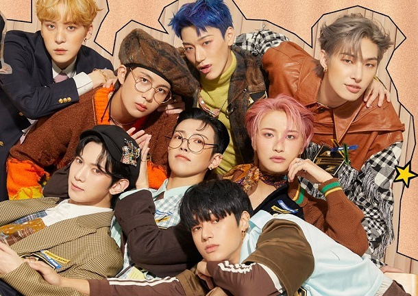

There were so many types of music band that i love the most because of the genre they sang into. The reason is, it felt like their song comfort me. However, there were certain group band that I love the most which are:
RM BTS
-Wild Flower

Ateez
-Turbulence
Figure above shows the one of my favourite band and singer and audio below is the most favourite song that recently hear which is ong above was sang by RM (Wild Flower).